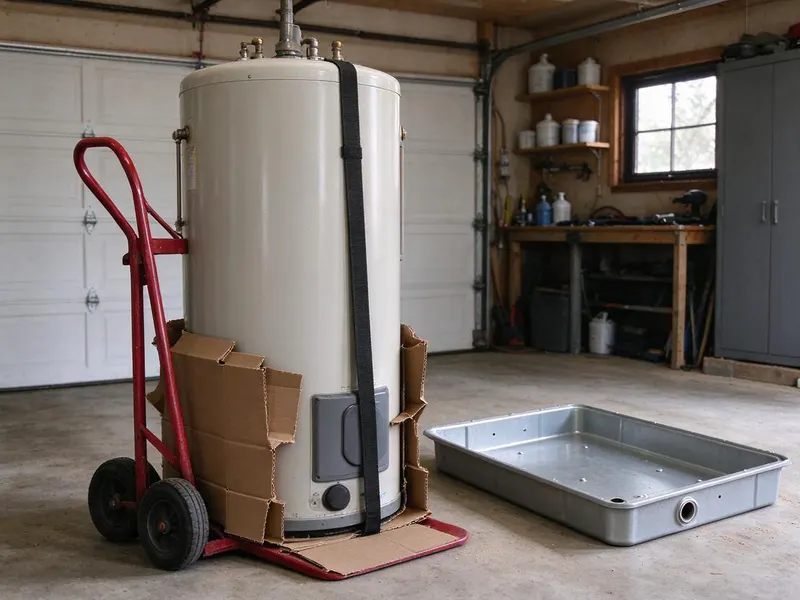
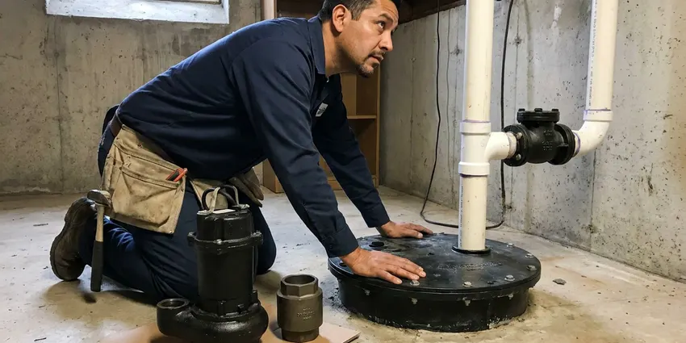

Basement Sump Pump Installation in Grand Prairie, TX
Protect your Grand Prairie home from water damage with a reliable basement sump pump installation. DFJ Plumbing provides expert service across Texas.
- Fast Sump Pump Installs
- Licensed Plumbers
- Upfront Pricing
- Local Grand Prairie Experts
Need Basement Sump Pump Installation in Grand Prairie, TX?
Secure your basement against water damage with our reliable plumbing solutions.
Professional Basement Sump Pump Installation in Grand Prairie, TX
DFJ Plumbing offers expert basement sump pump installation services designed to protect homes in Grand Prairie from potential flooding. Our skilled plumbers assess your property, recommend the best sump pump system, and ensure a precise, code-compliant installation to keep your lower levels dry.
Our expertise includes:
- Comprehensive site evaluation for optimal pump placement.
- Installation of primary and battery backup sump pump systems.
- Sizing and selecting the right pump for your basement's needs.

Additional Plumbing Installation Services in Grand Prairie, TX
We install water heaters, pumps, lines, and fixtures across Grand Prairie, TX with careful, permitted work that passes inspection the first time.


Customers
Why Choose DFJ Plumbing for Basement Sump Pump Installation in Grand Prairie, TX?
Choosing the right plumber for your basement sump pump installation is crucial for long-term protection. DFJ Plumbing brings years of experience and a commitment to quality service, ensuring your system functions flawlessly when you need it most.
- Flood Prevention, A properly installed sump pump prevents costly water damage to your basement and its contents.
- Foundation Protection, Keeping groundwater away from your foundation helps prevent structural issues and extends your home's lifespan.
- Health Benefits, A dry basement reduces the risk of mold and mildew growth, improving indoor air quality.
Citywide Coverage
DFJ Plumbing proudly serves every neighborhood and community within Grand Prairie and its surrounding areas for basement sump pump installation. We understand the unique drainage challenges different parts of Grand Prairie might face.
Experienced Team
Our plumbing technicians are highly trained and experienced in all aspects of basement sump pump installation, from initial assessment to final testing. They are familiar with various pump types and the specific requirements for homes in Texas.
Safety-First Approach
DFJ Plumbing always follows strict safety protocols and local building codes for all basement sump pump installations. Our commitment to compliance protects your home and ensures the longevity and reliability of your new system.
Trusted Certified Grand Prairie Plumbing Services Professionals
At DFJ Plumbing, we take pride in providing licensed, certified plumbing services throughout Grand Prairie, TX. Backed by leading industry credentials, our experienced plumbers combine technical skill with genuine customer care. Whether it is repair, installation, or maintenance, we follow strict safety and quality standards to deliver lasting results you can trust.
Call Us Now PHCC Plumbing Contractor Recognition
PHCC Plumbing Contractor Recognition Better Business Bureau (BBB) Accreditation
Better Business Bureau (BBB) Accreditation Angi Certified Pro
Angi Certified Pro ISO 9001 Quality Management Certification
ISO 9001 Quality Management CertificationReliable Basement Sump Pump Installation Services in Grand Prairie, TX
Residential Basement Sump Pump Installation in Grand Prairie
Protecting your family home from water damage is our priority. We install robust residential sump pump systems tailored to the size of your basement and the typical rainfall in Grand Prairie. Our plumbers carefully dig the sump pit, install the liner, and properly connect the pump to your home's drainage system and power supply, ensuring reliable operation for years to come. We also ensure that the discharge line directs water far away from your foundation.

Battery Backup Sump Pump Installation in Grand Prairie, TX
Power outages can happen, especially during severe weather, rendering your primary sump pump useless. We offer and install battery backup sump pump systems that automatically activate if the power goes out, providing continuous protection for your basement in Grand Prairie, TX. These systems include a deep cycle battery and a secondary pump, ensuring your basement remains dry even when the electricity fails, a critical feature for Texas storms.
Pedestal Sump Pump Installation in Grand Prairie
Pedestal sump pumps are an excellent choice for narrow or shallow sump pits, as their motor is located above the water level. This design makes them easier to maintain and can sometimes offer a longer lifespan due to less motor exposure to water. DFJ Plumbing can expertly install pedestal sump pumps in your Grand Prairie home, ensuring proper sizing and setup for effective water removal without occupying excessive space in your pit.
Submersible Sump Pump Installation in Grand Prairie, TX
Submersible sump pumps are designed to sit directly in the sump pit, submerged in water, making them quieter and less intrusive. They are powerful and effective for basements that experience significant water intrusion. Our team in Grand Prairie, TX will install your submersible pump with precision, ensuring proper sealing, discharge piping, and electrical connections for optimal performance and quiet operation, critical for finished basements.
Zoeller Sump Pump Installation in Grand Prairie
Zoeller pumps are known for their durability and reliability, making them a popular choice among homeowners. DFJ Plumbing is skilled in the installation of various Zoeller sump pump models, including their M53 Mighty-Mate and other high-performance series. We ensure your Zoeller pump is correctly integrated into your Grand Prairie home's plumbing to deliver consistent, flood-preventing service, backed by their reputable warranty.
Wayne Sump Pump Installation in Grand Prairie, TX
Wayne sump pumps offer a range of options, from basic utility pumps to advanced systems with integrated alarms and smart features. Our technicians are experienced in installing Wayne pumps, providing efficient and effective water removal solutions for your Grand Prairie, TX basement. We help you select the appropriate Wayne model based on your specific needs and ensure a professional installation that maximizes its performance and lifespan.
Sump Pump Basin and Discharge Line Installation in Grand Prairie
A complete sump pump system requires a properly installed basin and discharge line. We handle the excavation and placement of the sump basin, ensuring it's at the lowest point of your basement floor to collect water effectively. We also install the discharge line, ensuring it's correctly sloped, sealed, and routed away from your foundation to a suitable drainage area, preventing water from re-entering your Grand Prairie property.

Emergency Sump Pump Installation in Grand Prairie, TX
If you're facing an immediate flooding threat or your existing sump pump has failed, DFJ Plumbing offers emergency basement sump pump installation services in Grand Prairie, TX. We understand the urgency of protecting your home from water damage and will dispatch a skilled plumber quickly to assess the situation and install a new, reliable sump pump to prevent further issues. Don't let a failing pump lead to disaster.
Basement Sump Pump Installation Near Me in Grand Prairie, TX
When you search for 'basement sump pump installation near me' in Grand Prairie, you'll find DFJ Plumbing as your reliable local expert. We are deeply familiar with the unique water drainage challenges and soil conditions in Texas, allowing us to provide tailored solutions. Our proximity means faster response times and localized expertise for your basement protection needs.
DFJ Plumbing is dedicated to serving all homeowners in Grand Prairie and the surrounding communities. We're proud to be the trusted choice for basement sump pump installation, offering prompt, professional service right in your neighborhood. Our commitment to quality ensures your home is protected against potential flooding, providing peace of mind.
DFJ Plumbing at a Glance
- Licensed and insured plumbers serving Grand Prairie, TX
- Same-day appointments and 24/7 emergency response
- Upfront, flat-rate pricing before work begins
- 4.9-star rated by 812+ Texas customers
Grand Prairie Map
Grand Prairie Information
- Population
- 202,134
- Area codes
- 972/469/214
- Service area
- Grand Prairie and communities within 40 miles
- Nearby
- Arlington, Cedar Hill, Mansfield, DeSoto
For homes in Grand Prairie, TX, a basement sump pump is vital due to the risk of heavy rainfall, expansive clay soils that can retain water, and the potential for foundation damage from hydrostatic pressure.
Expert Services
Trust our professionals for reliable DFJ Plumbing solutions in Grand Prairie, TX.
Our Specialized Plumbing Services in Grand Prairie, TX
At DFJ Plumbing, we provide a complete range of plumbing services across Grand Prairie, TX. From leak detection to full system installations, our team ensures fast, precise, and affordable service for both residential and commercial properties. Explore our core services below:


How Our Basement Sump Pump Installation Process Works in Grand Prairie, TX
DFJ Plumbing follows a clear, systematic approach to basement sump pump installation, guaranteeing a high-quality and reliable system for your Grand Prairie, TX home.
Request a Quote
Call (737) 405-5978 or fill out our online form to schedule an initial consultation. We'll discuss your needs and arrange a convenient time for an on-site assessment.
On-Site Assessment
A licensed plumber will visit your Grand Prairie home to evaluate your basement's layout, identify potential water entry points, and determine the optimal location and type of sump pump for your specific situation.
Professional Installation
Our team will expertly install your chosen sump pump system, including excavating the sump pit, installing the basin, connecting the pump, and routing the discharge line according to local Texas codes. We ensure all electrical connections are safe and secure.
Frequently Asked Questions About Basement Sump Pump Installation in Grand Prairie
The cost of basement sump pump installation in Grand Prairie typically ranges from $800 to $2,000, depending on the type of pump, the complexity of the installation, and whether a new sump pit needs to be dug. Factors like battery backup systems or extensive discharge line routing can affect the final price. We provide a detailed, upfront estimate after an on-site assessment.
In many areas of Grand Prairie and Texas, a plumbing permit is required for new sump pump installations or significant replacements to ensure the work meets local building codes. DFJ Plumbing is knowledgeable about local permitting requirements and can assist you with obtaining the necessary permits to ensure your installation is compliant.
We install a wide range of high-quality, reliable sump pump brands, including Zoeller, Wayne, Little Giant, and Liberty Pumps. We can help you choose the best brand and model that fits your budget and specific needs for water management in your Grand Prairie home, considering factors like horsepower and features.
DFJ Plumbing provides a warranty on our labor for basement sump pump installations, typically for one year. The sump pump unit itself comes with a manufacturer's warranty, which can range from 1 to 5 years depending on the brand and model. We will provide you with all warranty details at the time of installation.
A standard basement sump pump installation usually takes between 4 to 8 hours. However, if a new sump pit needs to be excavated, or if there are unforeseen challenges with plumbing or electrical access, the process might extend to a full day. Our team works efficiently to minimize disruption to your home.
While it might seem like a DIY project, basement sump pump installation involves complex plumbing, electrical work, and proper discharge routing. Incorrect installation can lead to pump failure, electrical hazards, or ineffective water removal, potentially causing significant flood damage. It's always best to hire a licensed plumber for proper, code-compliant installation in Grand Prairie.
Given the potential for severe weather and power outages in Texas, especially during heavy rain events, a battery backup sump pump is highly recommended. It provides crucial protection by automatically activating when the main power fails, ensuring your basement remains dry even without electricity. It's a smart investment for peace of mind.
Common signs you might need a new sump pump include unusual noises during operation, visible rust or corrosion on the unit, frequent cycling on and off, or if it fails to turn on during heavy rain. If your pump is more than 7-10 years old, it's also wise to consider a replacement proactively before it fails completely.
What People Are Saying About Our Plumbing Experts?

Sofia M.
Two new toilets installed in one visit, no mess left behind, and the tech even adjusted a faucet he noticed was dripping. Fair pricing and really friendly.
Toilet Installation · Cedar Hill, TX
Patricia H.
We had a slab leak that two other companies could not find. DFJ Plumbing located it in under an hour, explained our options, and the price matched the quote to the dollar.
Slab Leak Repair · Cedar Hill, TXLaura S.
I scheduled a water heater replacement, and the team made the process smooth and affordable. The new unit works perfectly, and they cleaned up after completing the job.
Water Heater Replacement · Cedar Hill, TXDaniel K.
A pipe burst at 11 pm and they actually answered. The plumber showed up within the hour, shut everything down, and had us back to normal the next morning. Could not ask for more.
Emergency Plumbing · Irving, TX
Mark T.
When our office needed drain cleaning, DFJ Plumbing provided quick, reliable service. The plumber arrived on time and made sure every drain flowed perfectly before leaving. Very satisfied.
Drain Cleaning · Arlington, TX
James P.
Our commercial plumbing system had a leak under the sink, and DFJ Plumbing handled it professionally. The plumbers arrived quickly and restored everything without disruption to our customers.
Commercial Plumbing · Euless, TX